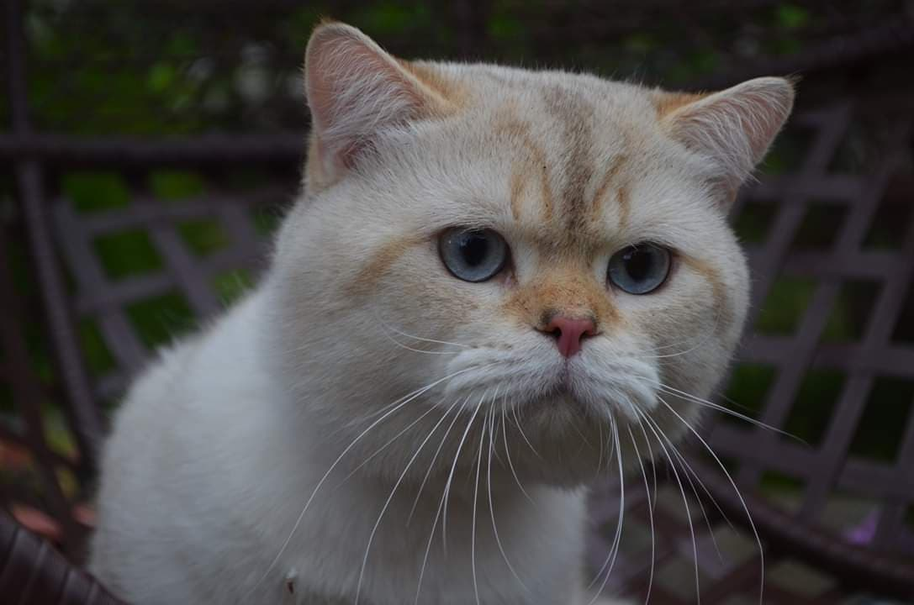

Шотландські капловухі завдяки своїм вухам мають оригінальний вигляд. Вони мають спокійний, урівноважений характер. Легко знаходять спільну мову з іншими свійськими тваринами. Кішки ласкаві, ніжні. Прив'язуються до людей. Малі кошенята відзначаються своєю активністю, грайливістю, що для більшості у дорослому віці не є характерною ознакою.
Скоттіш фолд має майже всі припустимі забарвлення
Походження: Шотландія
Інші назви: Скоттіш-фолд
Середня тривалість життя: 9-12 років
Індексація породи: SFS
Вага самців: 4—6 кг
Вага самок: 2—4 кг
Шотландський висловухий кіт буває як, власне, висловухим, так і прямовухим. Кошенята народжуються з прямими вухами, а приблизно у віці трьох-чотирьох тижнів у них вуха складаються… або ж ні! Все тому, що складене вухо продукується неповним домінантним геном і є результатом спонтанної мутації.
